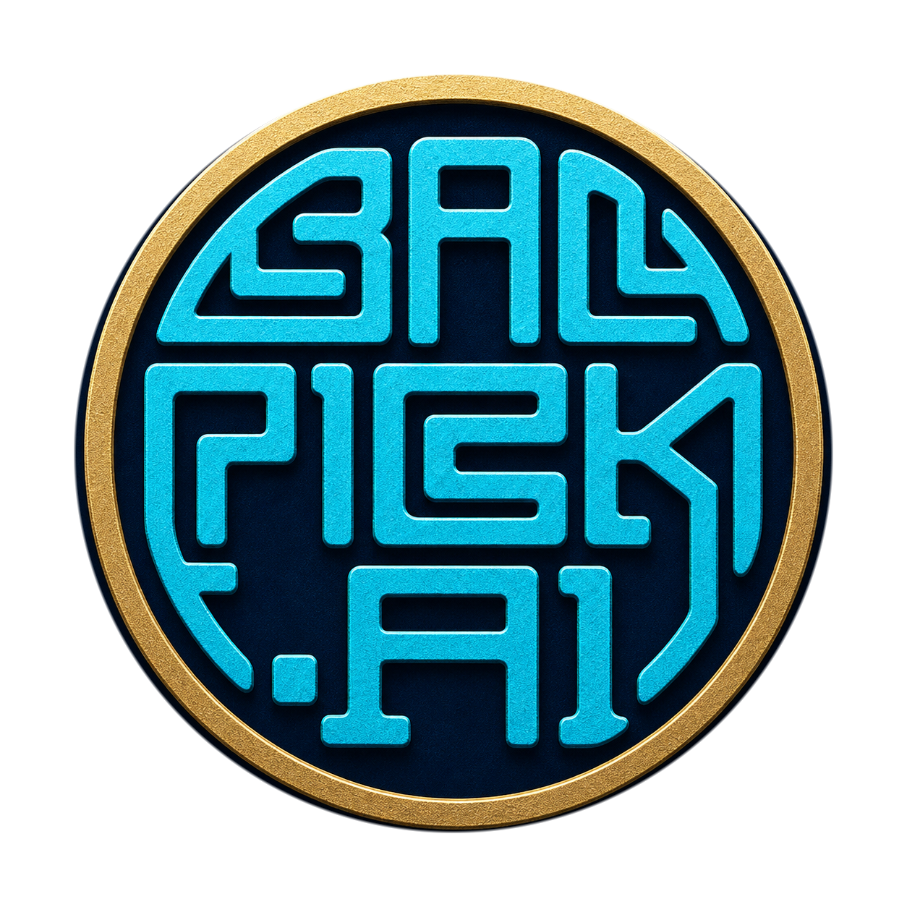

Matchup

5v5 SR match data
No data
試合データが取得されていません
League Client
ログインしてません
LoLクライアントを起動してログインすると、ドラフト情報を表示します。
Ready
こんにちは
ロビーまたはチャンピオン選択に入ると、ドラフト画面に切り替わります。
?
Current Game
試合中です
試合が終了したら、次のドラフトを監視します。
Draft Notes
ALLY
ENEMY
Draft Pick
CHAMPION SELECT
YOUR TEAM
CURRENT STATE
待機中
チャンピオン選択情報を監視しています。
ENEMY TEAM
現在のサモナー情報
{}
ロビー情報
{}
チャンピオン選択情報
{}
最後に受信したWebSocketイベント
{}
JSON表示エリア
{}
Champion Pool
得意チャンピオン登録
レーンごとに、普段使うチャンピオンを登録します。
TOP
まだ登録されていません。
一致するチャンピオンがありません。
自分がプレイしたチャンピオン統計
| チャンピオン | K/D/A |
|---|
条件に合うチャンピオン実績がありません。
レーンで対面したチャンピオン統計
| 対面チャンピオン | 自分のK/D/A |
|---|
条件に合う対面データがありません。
Settings
League of Legends インストールディレクトリ
このディレクトリ直下の lockfile を参照してLCU APIへ接続します。